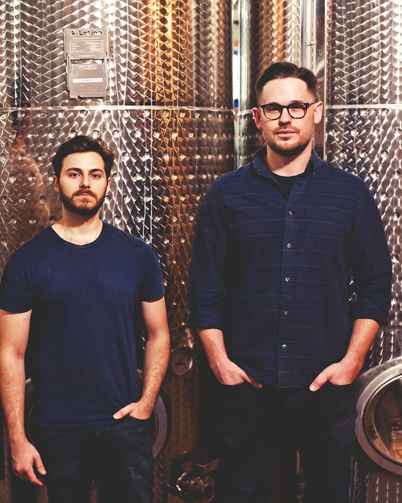

Thornton Distilling
Est. 1857 · Thornton, Illinois
Reserve
In 2014, as the oldest standing brewery in Illinois sat in a blighted state of disrepair, two craft distillers — founders Andrew Howell and Jake Weiss — happened upon its colorful history and discovered the historic limestone-filtered artesian well still flowed.
The partners invited their good friend Ari Klafter to join them. Ari was Assistant Distiller at renowned New England rum distillery Privateer, and holds a Master's degree in Brewing & Distilling Science from Heriot-Watt University in Edinburgh — the top distilling program in the world.
Five years later, on December 5, 2019 — exactly one hundred years to the day after federal agents had raided the building — the brewery opened its doors again. This time, as a distillery.

John Kinzie partners with fur trader Gurdon Hubbard to purchase the land. Hubbard discovers the artesian well while trading with the local population.
German immigrant John S. Bielfeldt erects a brewery with a ten-barrel kettle on the west bank of Thorn Creek. The limestone-filtered artesian well below produces water unrivaled by competitors.
Bielfeldt Brewing establishes itself as the most respected brewery in the region — quenching the thirst of the limestone quarry workers who were busy building Chicago.
The brewery is sold to Carl Ebner, who bottles "soda-pop" while secretly producing beer in the cellars. Federal agents raid the property, smashing vats and pouring thousands of gallons down the creek.
The brewery falls under control of the Chicago syndicate, supplying speakeasies across the city. Two of its operators are named on the first Public Enemies List.
Andrew Howell and Jake Weiss discover the abandoned brewery, find the artesian well still flowing beneath it, and begin the vision of Thornton Distilling Company.
On December 5 — Repeal Day, one hundred years after the property was raided — Thornton Distilling Company opens its doors. The well, still pouring.
A "Dead Drop" is a bygone Prohibition-era bootlegging term. Barrels of whiskey would be left at a secret location for pick-up when the coast was clear. Because of our building's colorful history and long tradition of malt fermentation, we're picking up where our predecessors left off.